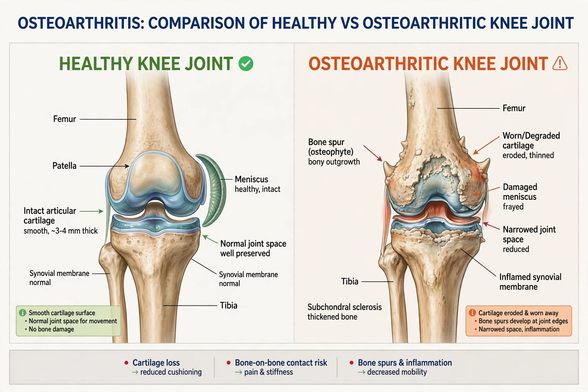

Osteoarthritis is the most common form of arthritis, a degenerative joint disease in which cartilage breaks down, causing pain, stiffness, and reduced mobility, most often in knees, hips, hands, and spine.
It results from mechanical stress, abnormal joint mechanics, and low-grade inflammation, unlike autoimmune rheumatoid arthritis. Diagnosis is clinical, supported by X-rays showing joint-space narrowing, osteophytes, and subchondral sclerosis. It affects hundreds of millions worldwide and rises with age.
First-line care is exercise, physiotherapy, and weight management; paracetamol and NSAIDs relieve pain; corticosteroid injections and, in severe cases, joint replacement surgery are options. No disease-modifying drug is established.